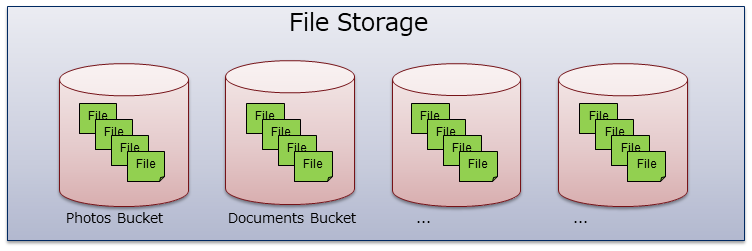
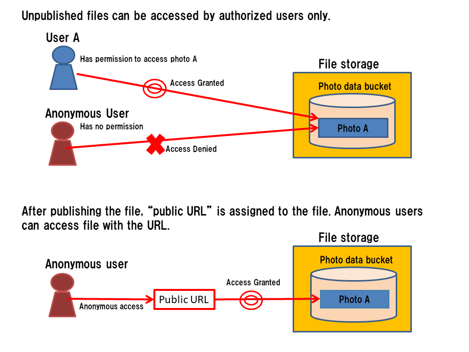

2.5. ファイルストレージ¶
2.5.1. ファイルストレージの概要¶
ファイルストレージは、バイナリ形式でのファイルを保存、読み出しすることができるストレージ機能です。
アップロードできるファイルサイズの上限はデベロッパーコンソールにより、設定可能です。 詳細は デベロッパーコンソール利用ガイド の「システム設定 - ファイルストレージ設定」を参照ください。
ファイルは、オブジェクトストレージと同様にバケット単位で管理することができます。 アクセス制限をファイル単位で設定することが可能です。
また、ファイルは「公開」を行うことができます。公開を行うと、そのファイルには認証なしでアクセスすることが できるようになります。
さらに、ファイルの同時アクセスの排他制御を対応するため、複数ユーザから、同一ファイルの読み書きを行っても、 ファイルの不整合が生じません。
2.5.2. ファイルストレージのバックエンド¶
ファイルを格納するバックエンドとしては、以下のいずれかを使用できます。
- MongoDB
- S3互換オブジェクトストレージ
デフォルトでは MongoDB 内にファイルが格納されます。これは MongoDB の GridFS という 機能を使用しています。
これとは別に S3互換オブジェクトストレージにファイルを格納することもできます。 テナント単位・もしくはファイルバケット単位で格納先となるS3互換オブジェクトストレージを 設定することで利用可能となります。 詳細は デベロッパーコンソール利用ガイド の「テナント設定 - 外部ストレージ設定」を参照ください。
2.5.3. ファイルバケット¶
オブジェクトストレージと同様、ファイルを格納する入れ物として「ファイルバケット」があります。
ファイルバケットには任意の名前を付けることができます。また、バケット内に格納できるファイル数には 上限はありませんが、諸元として保証しているファイル数の上限は1テナントあたり1,000個です。 さらに、ファイルの種類についても制限はありませんが、管理上は用途別に個別にバケットを作成することをおすすめします。
2.5.4. ファイル¶
バケット内のファイルは、「ファイル名」で一意に識別します。 １つのバケット内には、同名のファイルを２つ以上格納することはできません。
ファイルは、メタデータと本体の２つで管理します。
メタデータは以下のように JSON 形式で表現します。
{
"_id": "533d31c43cbc3dd2d0b32cd1",
"filename": "hello.txt",
"contentType": "text/plain",
"length": 12039,
"ACL": {
"owner": "01234567890",
"r": ["g:authenticated"],
"w": ["g:authenticated"],
},
"publicUrl": "https://xxxxxxx/hello.txt",
"createdAt": "2013-08-27T04:37:30.000Z",
"updatedAt": "2013-08-27T04:37:30.000Z",
"metaETag": "9d4a7501-9ccc-4685-bff8-7b2933063f8f",
"fileETag": "b7c29998-310a-4a61-921f-44438261691c",
"cacheDisabled": false,
"options": {
"owner": "日電 太郎",
"file_version": "1.0.0"
}
}
- _id : ファイルのメタデータのオブジェクトIDです。
- filename : ファイルの名前です。バケット内には同一のファイル名のファイルは１つのみしか入れられません。
- contentType : ファイルのコンテンツタイプです。
- length : ファイルのバイト数です。これはファイル本体をアップロードすると、自動で設定されます。
- ACL : ファイルの ACL です。
- createdAt : ファイルを作成した日付です。最初にアップロードした日付になります。
- updatedAt : ファイルを最後に更新した日付です。
- publicUrl : 公開ファイルをアクセスするためのURLです（なお、公開ファイルのみ存在）。
- metaETag : ファイルのメタデータのETagです。
- fileETag : ファイル本体のETagです。
- cacheDisabled : キャッシュ禁止フラグです（ファイルストレージのオフライン機能で利用。現時点では未対応）。
- options: ユーザ定義メタ情報
2.5.5. ファイル操作API¶
ファイルを操作するための API として、各SDKでは以下のものを提供しています。
- ファイルの新規アップロード : メタデータと本体を同時に登録します。
- ファイルの更新アップロード : 本体のみを差し替えます。
- ファイルのダウンロード : 本体をダウンロードします。
- ファイルの削除 : メタデータと本体を削除します。
- 検索 : バケットに含まれるメタデータ一覧を取得します。
- メタデータの更新 : メタデータのみを更新します。
- ファイルの公開：ファイルを認証なしでダウンロードできる一意な URLを作成します。
- ファイルの公開解除：ファイルの公開で作成したURLを削除します。
2.5.6. ファイルの公開¶
ファイルの公開および公開解除用の API を提供しています。
ファイルを公開すると、ファイル対して一意な URL が割り当てられます。 この URL には認証なしでアクセスすることができますので、HTML の a タグや img タグで 直接ファイルにアクセスさせることができるようになります。
{kind=link}
2.5.7. ファイルの同時アクセスの排他制御¶
ファイルの同時アクセスの排他制御を対応しています。
一般的な排他ポリシーとして、ファイルへのアクセス種別(read/write)によらず、同じファイルに対して同時アクセスを全て拒否する排他制御があります。しかし実用上、あるファイルのダウンロード中に、そのファイルを更新することはよくあるので、ダウンロード中にファイルの更新を全て拒否すると、ユーザに対する利便性が損なわれます。
そこで NEC BaaS では、以下のような同時アクセスの排他制御のポリシーを採用しました。
- ファイルのダウンロード中に、同じファイルに対してのダウンロード、更新、削除は許可しますが、新規作成は拒否します。
- ※１ ファイルの更新前後で、そのファイルを別扱いとします。変更前のファイルに対するファイルのダウンロードは最後まで完了できます。サーバ内部処理として、更新完了後にファイル本体の差し替えを行います。
- ※２ ファイルの削除も更新と同様に、実行中のファイルのダウンロードが最後まで完了できます。なお、ファイルの削除ではまず論理的削除が実行され、一定期間（24時間）経過後、自動的に物理削除されます。
- ファイルのダウンロード中、更新中、あるいは、削除中に、同じファイルに対するアクセス(ダウンロード、更新、削除、新規作成)は全て拒否します。
{kind=link}